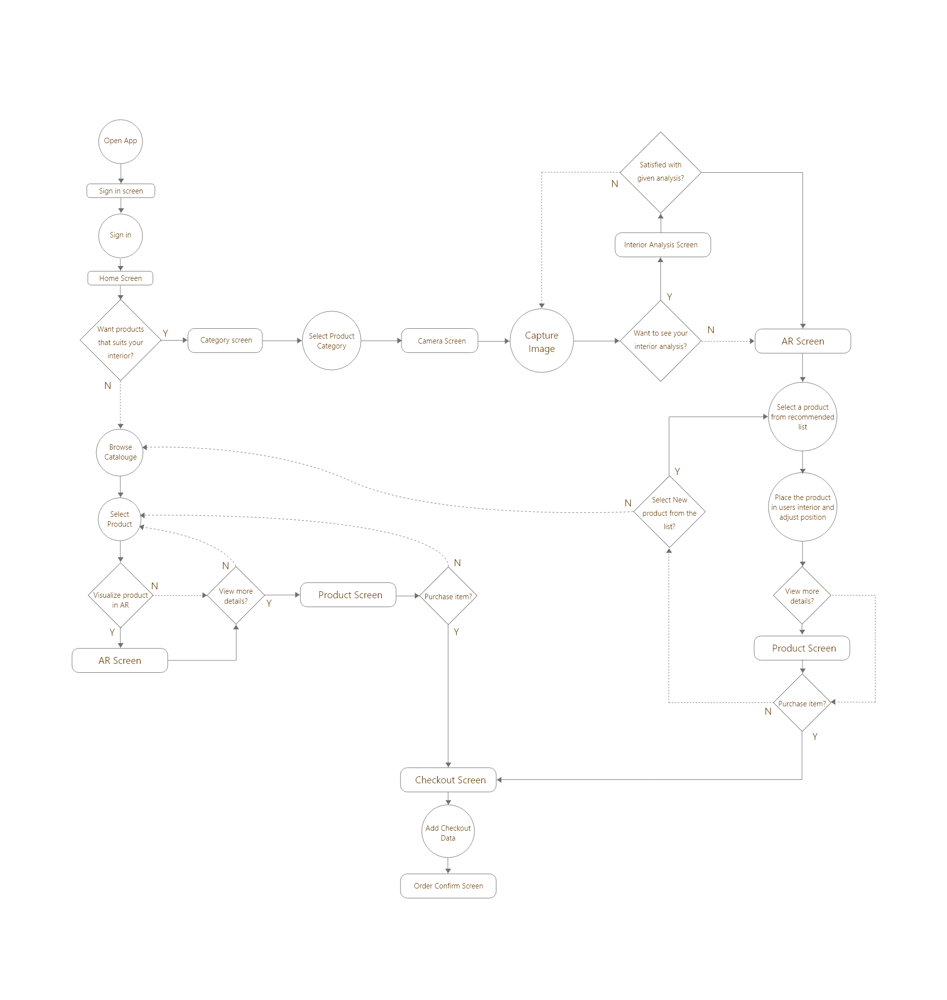
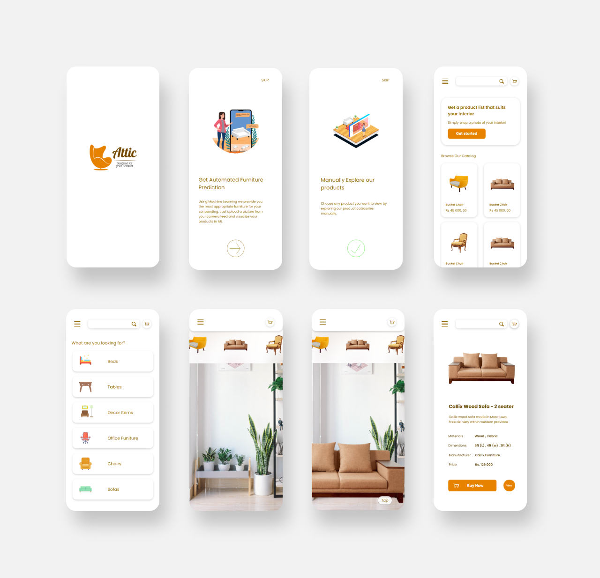

Traditional way to buy furniture items for a person is go to a furniture showroom and choose the product you think is the best and get it delivered to you.
Once the products are delivered customers begin to realize the furniture items they bought looked much better in the simulated environment of the showroom but not in their own homes. Sometimes the furniture items might not even fit inside the free space of the house.
Furniture in showrooms are arranged in a way to match them to the interior of the showroom or a simulated interior.
Sometimes these simulated environments may mislead customers in to buy a product that does not suit users interior visually or dimensionally inaccurate.
Our challenge was to find a solution for customers to find the most appropriate furniture item for their interior out of the current market products.
Groups of people who might face afore mentioned problems directly or infirectly.
New Home Buyers
Property Sellers
Inerior Designers
Furniture Retailes
Say
"New sofa I bought is too big for the living room"
"The dining table in my house is too old for my interior"
"I'm not sure how this table would look in my office room"
Think
"The other showroom might have better furniture products"
"want to browse more furniture retailers than the usual high end brands"
Does
Check online for branded furniture catalogues
Goes to a showroom to checkout furniture items
Feels
Worried whether the item he bought dest not fit or match to his interior
Frustrated when he doesn't find a satisfactory furniture item in one showroom
Unsecured to travel outside during the pandemic
George
Occupation : Lawyer
Residency : Colombo
Family : Married w Children
Goals
Furnish his new home office with ideal furniture items.
Frustrations
Have to go to another showroom when there is no satisfactory product in one showroom
Cannot check if the showroom item would fit in his home office
Always see the same lists of products from the same manufacturers. (Nothing new)
Customers do not have a way to check if the dimensions of the product fit in the interior. (Unless they pre measure the interior)
Customers do not have a way to check how does the product style & color matches the interior of their homes
Users need a way to reach out to other local vendors or manufacturers.
Users need a way to access and compare furniture products from different manufacturers
Our Solution is a platform named attic which consist of a web and a mobile application.
The mobile application will be used by the general furniture customers. They can use the mobile app to get a list of product which currently exist in the market after using the apps background analyzing feature. Then they can visualize the product in an AR environment.

